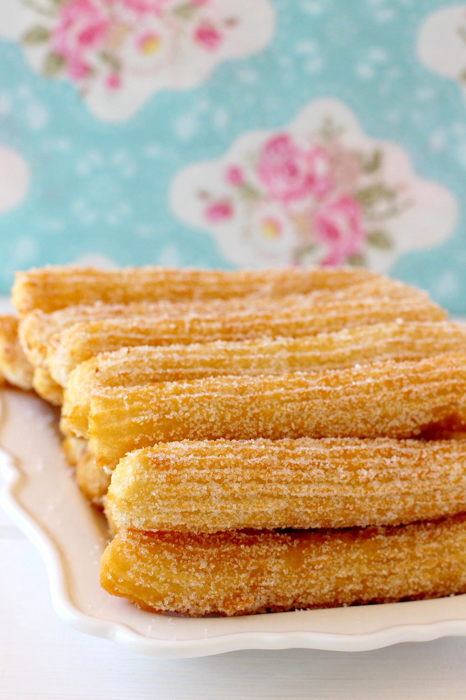

El Moro
Definitivamente los mejores churros de la Ciudad de México. Desde 1935, esta churrería ha tenido en sus mesas a personajes como Cantinflas y Resortes, así como a intelectuales mexicanos como Carlos Fuentes y Octavio Paz. Son los autores del ‘consuelo’, un sándwich de mini rosca de churro con helado de chocolate, vainilla, fresa u Oreo. Además tienen los chocolates calientes más exquisitos, como el español o el suizo. La sucursal más tradicional es la de Eje Central, pero con la renovación de su imagen abrieron nuevas sucursales alrededor de la ciudad.
